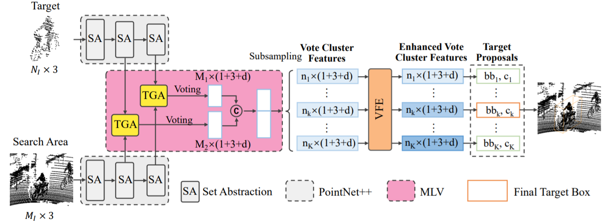
MLVSNet: Multi−Level Voting Siamese Network for 3D Visual Tracking
Zhoutao Wang, Qian Xie (equal first author), Yu-kun Lai, Jing Wu‚ Kun Long, Jun Wang
IEEE International Conference on Computer Vision (ICCV), 2021
[PDF] [Code]
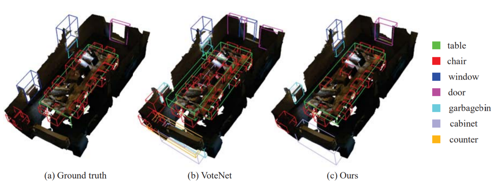
VENet: Voting Enhancement Network for 3D Object Detection
Qian Xie, Yu-kun Lai, Jing Wu‚ Zhoutao Wang‚ Dening Lu‚ Mingqiang Wei, Jun Wang
IEEE International Conference on Computer Vision (ICCV), 2021
[PDF]
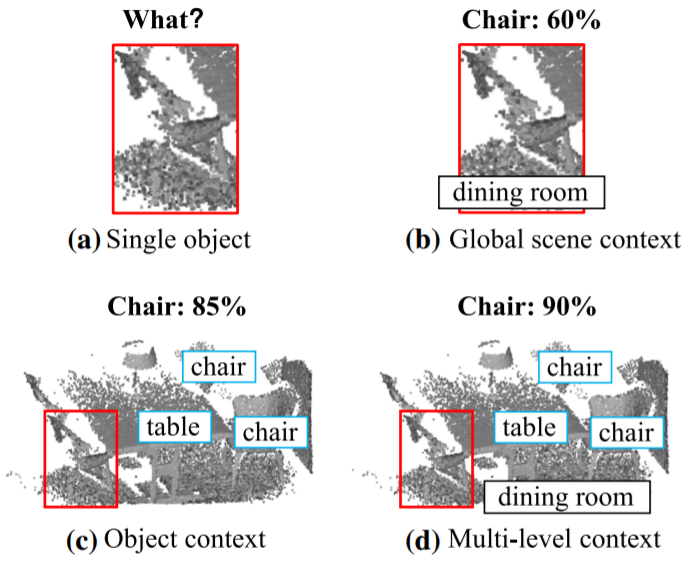
Vote−Based 3D Object Detection with Context Modeling and SOB−3DNMS
Qian Xie, Yu-kun Lai, Jing Wu‚ Zhoutao Wang‚ Yiming Zhang‚ Kai Xu, Jun Wang
International Journal of Computer Vision (IJCV), 2021
[PDF]
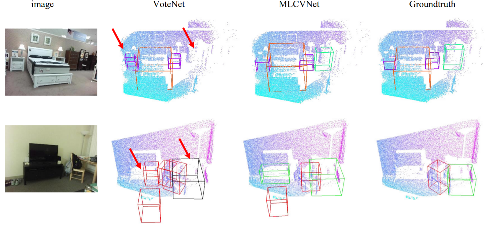
MLCVNet: Multi−Level Context VoteNet for 3D Object Detection
Qian Xie, Yu-kun Lai, Jing Wu‚ Zhoutao Wang‚ Yiming Zhang‚ Kai Xu, Jun Wang
IEEE Conference on Computer Vision and Pattern Recognition (CVPR), 2020
[PDF] [Code]
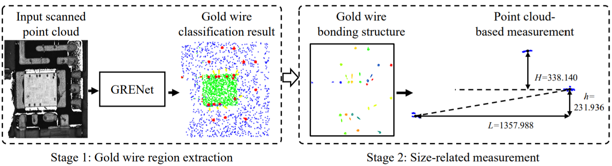
Integrated Circuit Gold Wire Bonding Measurement via 3D Point Cloud Deep Learning
Qian Xie, Kun Long, Dening Lu, Dawei Li, Yuan Zhang, Jun Wang
IEEE Transactions on Industrial Electronics (T-IE), 2021
[PDF]
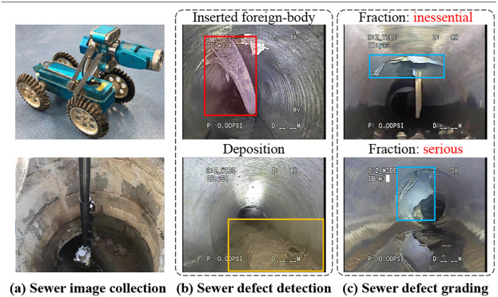
Sewer pipe defect detection via deep learning with local and global feature fusion
Dawei Li, Qian Xie, Zhenghao Yu, Qiaoyun Wu, Jun Zhou, Jun Wang
Automation in Construction (AIC), 2021
[PDF]
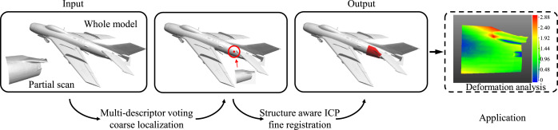
Part-in-whole point cloud registration for aircraft partial scan automated localization
Qian Xie, Yiming Zhang, Xuanming Cao, Yabin Xu, Dening Lu, HongHua Chen, Jun Wang
Computer-Aided Design (CAD), 2021
[PDF]
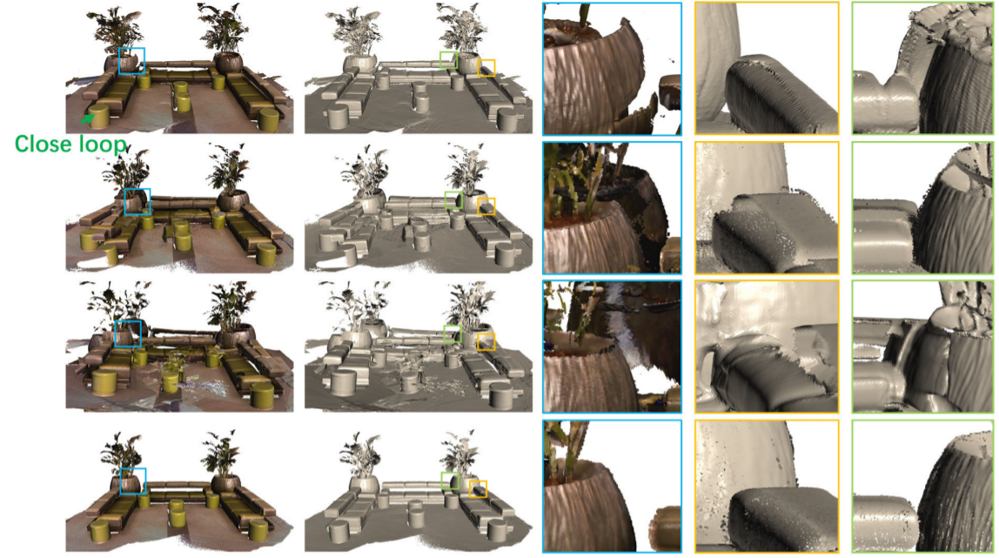
Robust and Accurate RGB-D Reconstruction With Line Feature Constraints
Yabin Xu, Laishui Zhou, Hao Tang, Qiaoyun Wu, Qian Xie, HongHua Chen, Jun Wang
IEEE Robotics and Automation Letters (RA-L), 2021
[PDF]
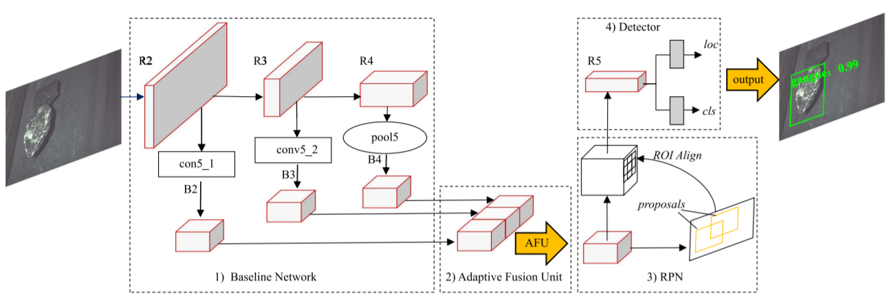
Gangue Localization and Volume Measurement Based on Adaptive Deep Feature Fusion and Surface Curvature Filter
Jianping Yang, Jianlin Peng, Yida Li, Qian Xie, Jun Wang
IEEE Transactions on Instrumentation and Measurement (TIM), 2021
[PDF]
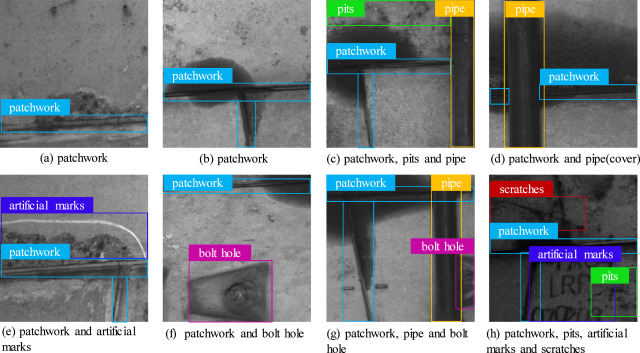
Automatic defect detection and segmentation of tunnel surface using modified Mask R-CNN
Yingying Xu, Dawei Li, Qian Xie, Qiaoyun Wu, Jun Wang
Measurement (Measurement), 2021
[PDF]
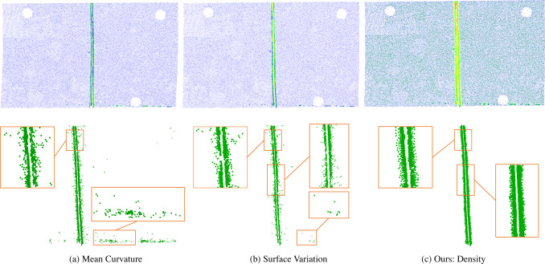
Aircraft skin gap and flush measurement based on seam region extraction from 3D point cloud
Kun Long, Qian Xie, Dening Lu, Qiaoyun Wu, Yuanpeng Liu, Jun Wang
Measurement (Measurement), 2021
[PDF]
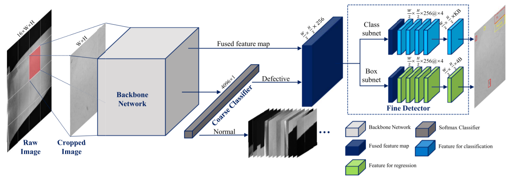
Tiny Defect Detection in High-Resolution Aero-Engine Blade Images via a Coarse-to-Fine Framework
Dawei Li, Yida Li, Qian Xie, Yuxiang Wu, Zhenghao Yu, Jun Wang
IEEE Transactions on Instrumentation and Measurement (TIM), 2021
[PDF]
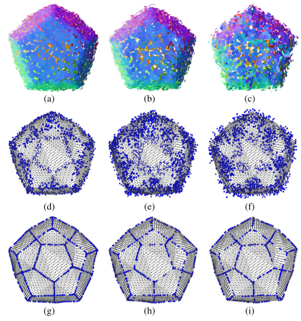
Multiscale Feature Line Extraction From Raw Point Clouds Based on Local Surface Variation and Anisotropic Contraction
HongHua Chen, Yaoran Huang, Qian Xie, Yuanpeng Liu, Yuan Zhang, Mingqiang Wei, Jun Wang
IEEE Transactions on Automation Science and Engineering (TASE), 2021
[PDF]
 Real-Time Plane Detection with Consistency from Point Cloud Sequences
Real-Time Plane Detection with Consistency from Point Cloud Sequences
Jingxuan Xu, Qian Xie, HongHua Chen, Jun Wang
Sensors (SENSORS), 2021
[PDF]
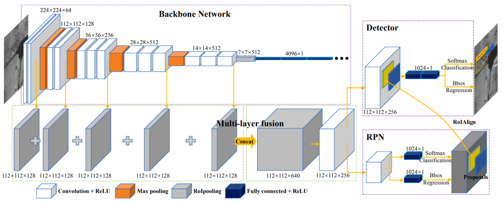
Automatic defect detection of metro tunnel surfaces using a vision-based inspection system
Dawei Li, Qian Xie, Xiaoxi Gong, Zhenghao Yu, Jingxuan Xu, Yangxing Sun, Jun Wang
Advanced Engineering Informatics (AEI), 2020
[PDF]
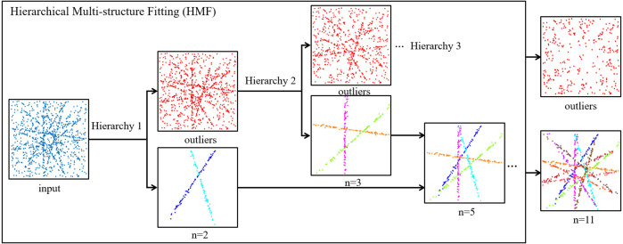
Aircraft Seam Feature Extraction from 3D Raw Point Cloud via Hierarchical Multi-structure Fitting
Jiajia Dai, Mingqiang Wei, Qian Xie, Jun Wang
Computer-Aided Design (CAD), 2020
[PDF]
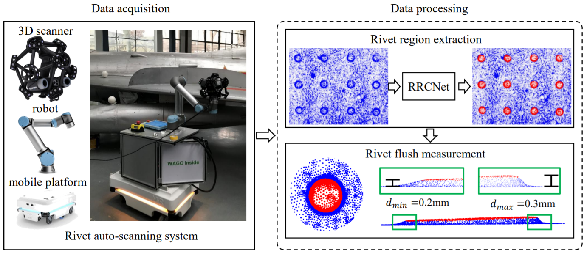
RRCNet: Rivet region classification network for rivet flush measurement based on 3-D point cloud
Qian Xie, Dening Lu, Anyi Huang, Jianping Yang, Dawei Li, Yuan Zhang, Jun Wang
IEEE Transactions on Instrumentation and Measurement (TIM), 2020
[PDF]
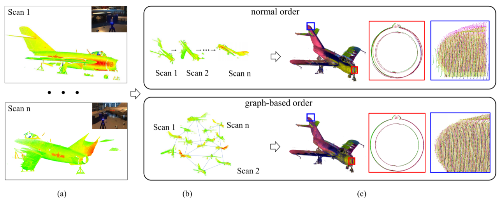
Density-invariant registration of multiple scans for aircraft measurement
Yan Wang, Yuanpeng Liu, Qian Xie, Qiaoyun Wu, Xianglin Guo, Zhenghao Yu, Jun Wang
IEEE Transactions on Instrumentation and Measurement (TIM), 2020
[PDF]
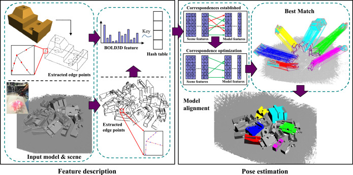
BOLD3D: A 3D BOLD descriptor for 6Dof pose estimation
Jun Zhou, Yuanpeng Liu, Qian Xie, Jinshan Liu, Yuqi Zhang, Xusheng Zhu, Xiao Ding
Computers & Graphics (C&G), 2020
[PDF]
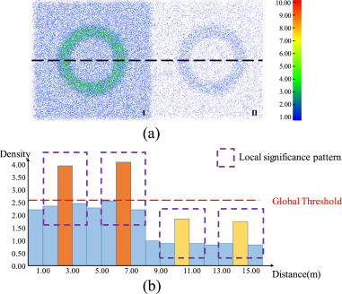
Aircraft skin rivet detection based on 3D point cloud via multiple structures fitting
Qian Xie, Dening Lu, Jingxuan Xu, Jiajia Dai, HongHua Chen, Jun Wang
Computer-Aided Design (CAD), 2020
[PDF]
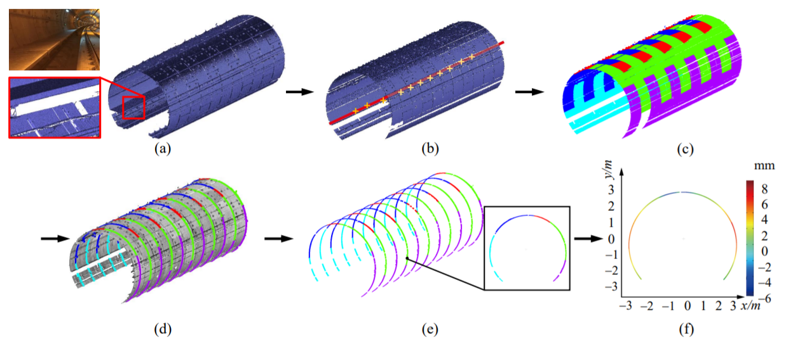
Tunnel Deformation Inspection via Global Spatial Axis Extraction from 3D Raw Point Cloud
cheng Yi, Dening Lu, Qian Xie, Jingxuan Xu, Jun Wang
Sensors (SENSORS), 2020
[PDF]
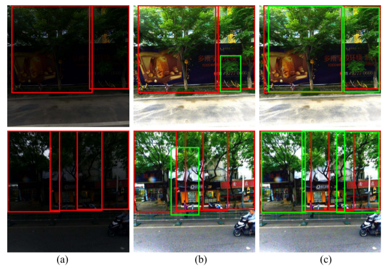
Detecting trees in street images via deep learning with attention module
Qian Xie, Dawei Li, Zhanghao Yu, Jun Zhou, Jun Wang
IEEE Transactions on Instrumentation and Measurement (TIM), 2019
[PDF]
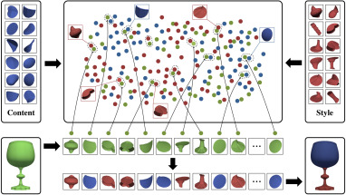
3d shape synthesis via content–style revealing priors
Oussama Remil, Qian Xie, HongHua Chen, Jun Wang
Computer-Aided Design (CAD), 2019
[PDF]
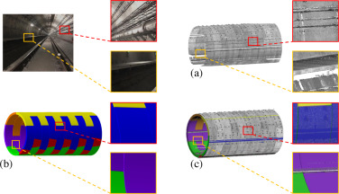
Hierarchical tunnel modeling from 3D raw LiDAR point cloud
Cheng Yi, Dening Lu, Qian Xie, Shuya Liu, Hu Li, Mingqiang Wei, Jun Wang
Computer-Aided Design (CAD), 2019
[PDF]
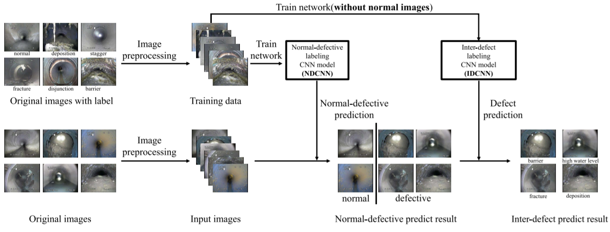
Automatic detection and classification of sewer defects via hierarchical deep learning
Qian Xie, Dawei Li, Jingxuan Xu, Zhenghao Yu, Jun Wang
IEEE Transactions on Automation Science and Engineering (TASE), 2019
[PDF]
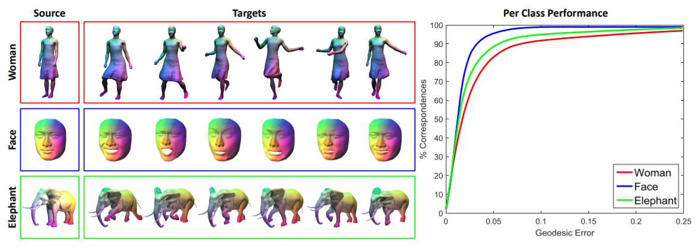
Intrinsic shape matching via tensor-based optimization
Oussama Remil, Qian Xie, Qiaoyun Wu, Yanwen Guo, Jun Wang
Computer-Aided Design (CAD), 2019
[PDF]
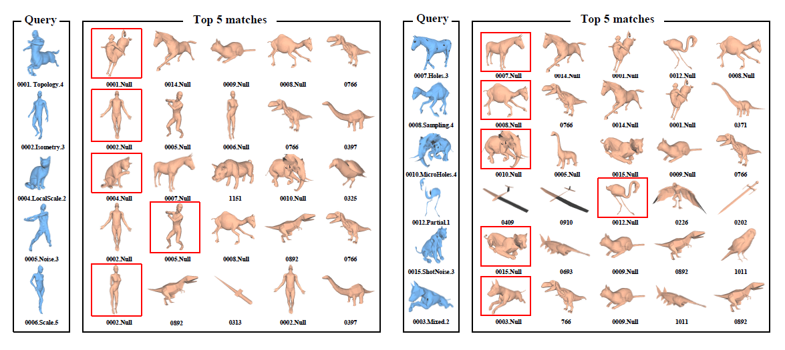
Data‐Driven Sparse Priors of 3D Shapes
Oussama Remil, Qian Xie, Xingyu Xie, Kai Xu, Jun Wang
Computer Graphics Forum (CGF), 2017
[PDF]
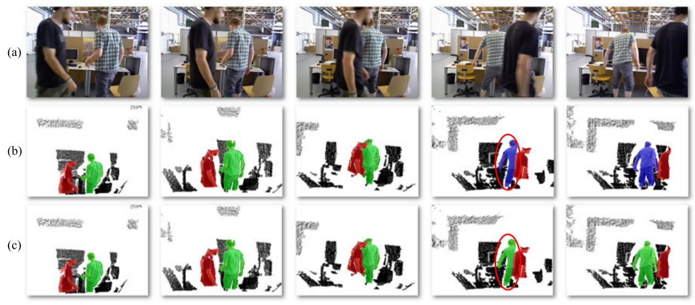
Object detection and tracking under occlusion for object-level RGB-D video segmentation
Qian Xie, Oussama Remil, Yanwen Guo, Meng Wang, Mingqiang Wei, Jun Wang
IEEE Transactions on Multimedia (TMM), 2017
[PDF]
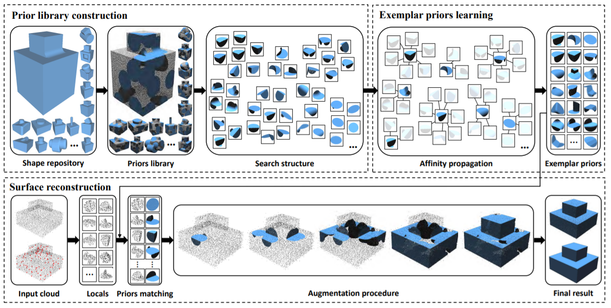
Surface reconstruction with data-driven exemplar priors
Oussama Remil, Qian Xie, Xingyu Xie, Kai Xu, Jun Wang
Computer-Aided Design (CAD), 2017
[PDF]
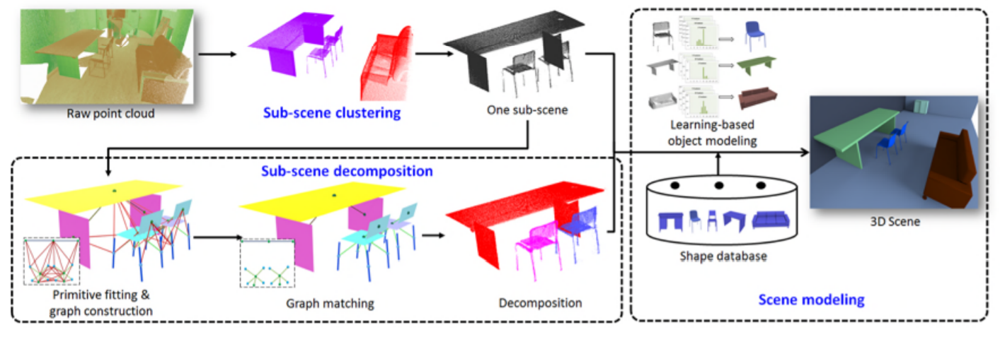
Cluttered indoor scene modeling via functional part-guided graph matching
Jun Wang, Qian Xie, Yabin Xu, Laishui Zhou, Nan Ye
Computer Aided Geometric Design (CAGD), 2016
[PDF]